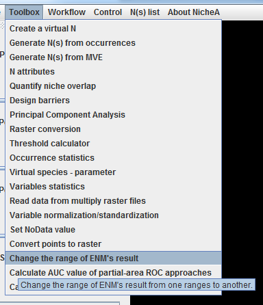
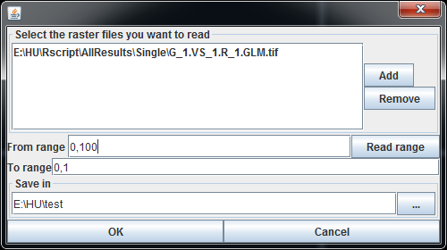

Change the range of ENM's result
The ranges of ENMs' result are based on the software you use. Maxent generates a [0, 1] result with default settings. openModeller's result is [0, 100], and BIOMOD2 is [0, 1000]. Before comparing the results created from different ENM software, you need universalize the range of the ENM.
Figure 1. The menu to invoke this function

After selecting the required raster files, and set up the relevant parameters in the dialog (Fig.2), you can convert the ENM result from one range to another. If you don't know the range of the original raster file clearly, the button "Read range" will ask NicheA to calculate the range of the first selected raster file, and set up the "From range" automatically.
Figure 2. The dialog of this function
